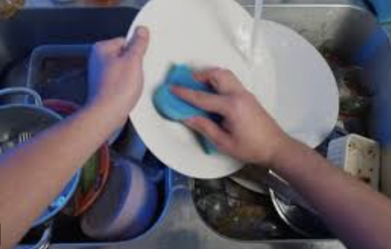

How we spend our time is one of the most important questions facing any mortal creature.1 While you can, with effort, earn more money, you cannot—at least in the course of normal life2—create more time for yourself. As an extensive recent review of the economics of attention points out (Loewenstein and Wojtowicz 2025), the time we have is limited and rivalrous: if you spend it on one thing, you cannot spend it on another.
1 Aren’t all creatures mortal? Perhaps not. Some jellyfish have the ability to revert to an earlier life-cycle stage and start again.
2 Astronauts in orbit experience time more slowly than their Earth-bound relatives. It doesn’t mean they get more time overall, however, just that the clock has moved forward more on Earth than they have in space. It’s a small effect: even 1,000 days in space only leads to a clock-difference of 0.027 seconds.
How we spend our time is all the more important in an age when competition for our attention is so high. There are many services that have no cost, but which do rely on our attention (and our data too) to make money. In many ways, how we decide to use time is a classic economics problem just like how we decide to use other scarce resources like labour and capital.
This, for me, is why time use is so interesting and why I am such a fan of time-use surveys. Some examples of these are the American Time Use Survey and ONS’ Time use in the UK. To help with the substantial hill that UK public sector productivity has to climb, ONS has helpfully begun a time-use survey specifically targeted at that called Time use in the public sector.
Time use surveys offer rich and useful information, and one of their hard-to-replace functions is to ask people how they feel or what they intended while they were spending time doing this or that. Here’s a list of just some of the useful info they offer (for more on their usefulness, see Joyce and Stewart (1999)):
- quantifying, and establishing the value of, non-market work, helping with inclusivity as more non-market work is performed by women
- verifying existing series on hours worked
- assessment of changes in quality of life, and helping to understand phenomena like the well-paid working more (apparently contrary to economic theory)
- assessing the amount of time spent in education and training
- assessing how government policies affect the way individuals spend their non-working time
- an aid in measuring well-being
- a way to understand the attention economy
However, granular time use surveys are expensive to run and may not always be accurate—can you recall what you were doing yesterday at 3pm? How about last week at the same time? Even if you are supposed to be writing down what you’re doing in close to real time, it’s very easy to forget.
Well, very speculatively, and as a complement to those existing surveys, here is an idea for a way to get more granular time-use data.
An alternative and complementary approach to measuring time use
The crux of this idea is to collect time-use data using low-cost wearable computers, or people’s existing devices, and methods from data science/AI. The device would be hung around the neck (as some people do with their phones today) or pinned on (in the manner security guards wear cameras). In this position, it would take regular snapshots of what was happening. Then—really importantly—those snapshots would be processed securely on-device and turned into counts of time use according to a given taxonomy.
We might call this approach of generating numbers on-device federated statistics, in analogy with federated machine learning. The on-device part is designed to protect privacy: we don’t want to know exactly what someone is doing, just how it fits into the time use taxonomy. It may not be possible to boil down a model enough to fit on a small device like a phone or raspberry pi just yet, but it’s likely to happen soon.
There are two options for the wearable device:
- an app on a mobile phone (as most mobile phones have a camera)
- a bespoke device developed expressly for this purpose
Mobile phone app
This approach has the benefit that a questionnaire that complements the machine learning-driven activity recording could be bundled into the same app as the machine learning itself. It would require the provision of a lanyard that ensures that the mobile phone is front facing, and the development of software that could regularly record photographs, run the images through a machine learning algorithm, and transmit activity counts back to the office. The software could potentially query the participant on the intent behind each activity each day too.
There are a couple of downsides to the mobile phone app approach: first, mobile phone batteries may run out faster than participants are normally used to, which could be annoying or could modify the results; and, second, the transmission of counts and survey responses would require data—which would cost users and may put some off from participating or lead to sample selection issues.
However, most people have a smartphone and they’re increasingly powerful and energy efficient. The phone is already connected to the mobile network for data upload. So this approach has potential. Better yet, the statistical agency would only need to send out lanyards (cheap) and write the software.
A bespoke wearable device
A bespoke wearable device is more intrusive than a mobile phone, and the statistical office would have to pay for the build too.
Build
Each wearable device would consist of:
- a Raspberry Pi Zero 2 W, a small (65mm x 30mm x 5mm), wifi-enabled, low-cost (<£4.80) computer
- a Raspberry Pi Camera Board v2, with 8 megapixel resolution (£21)
- a Raspberry Pi Zero Camera Adapter (£5)
- an 8GB MicroSD card (£4)
- a battery than can last for around 7 hours (Lithium Ion Polymer Battery - 3.7v 1800mAh; £11)
- a USB charging device (PowerBoost 500 Charger - Rechargeable 5V Lipo USB Boost @ 500mA+; £15)
- an LED light (Adafruit LED Sequins; £1)
- a button (Tactile Switch Buttons, 6mm slim; £0.20)
- a slide switch (Breadboard-friendly SPDT Slide Switch; £1)
- a 3D printed case or produced case that fits a Zero 2 W and camera (eg this official one; £6)
- a lanyard suitable for a Raspberry Pi case (eg this Adafruit one; £1.50)
The total cost per unit is £70—£80. The components would need to be assembled.
With regards to software, the following need to be installed on the device:
- the Raspbian Jessie Lite operating system
- packages to make the camera take photos (eg WiringPi or Picamera)
- a version of Python
- a custom-trained and fine-tuned version of the machine learning tinyYOLO package or YOLO-pi package, for turning images into counts of objects. Alternatively a modern, small vision model that can also do object recognition
Then there’s the question of how to get the counts back to a central server. There are three options:
- physically return the units and plug them in. Manual, slow.
- use the Wifi connectivity… but this requires some way for users to input their Wifi network passwords
- add pre-set mobile connectivity to the devices. This comes at considerable extra expense, at least £80 and likely more. Plus extra for network costs.
Operation
After assembly and installation, it need only be turned on for it to begin capturing images at a pre-defined interval. The status LED light will turn ON while the camera is taking a picture.
Participants can turn the camera off by pressing and holding the halt button for 2 seconds. The status LED will turn ON while the system performs a clean shutdown (about 20 seconds), then OFF to indicate it has shut down.
Which device approach is best?
It seems pretty clear that using smartphones, which already have everything that’s needed on a device, is more efficient. And has lower barriers to entry: participants need only download an app and receive a (relatively cheap to produce) lanyard that keeps the camera in place, and they’re good to go.
Now the big downside of the smartphone-taking-photos approach is that many people today spend a lot of time actually on their mobile phones. But don’t worry! Most modern smartphones track people’s use of apps. If this data could also be released to the time use app then it could be recorded in broad categories as well, and would show how that time was being spent.
How feasible is a time use smartphone app?
Can you get an object detection model working on a smartphone? Yes! Ultralytics has made YOLO models for Android and iOS. And language models are coming on-stream too, for example mobile vision language model MobileVLM. Eventually, the tech will get to a point where this works on devices.
And just to show that it can work at all let’s take this image:

We’ll now use Simon Willison’s llm package to run Claude 4.5 Sonnet against it to see what’s happening here.
# install llm
uv tool install llm
# install the anthropic plugin
llm install llm-anthropic
# set your API key
llm keys set anthropic
# Paste key hereNow, with the above image,
llm -m claude-sonnet-4.5 'what activity is happening in this image?' -a mystery_activity.pngResponse:
In this image, someone is **washing dishes** by hand. You can see hands using a blue sponge or cloth to clean a white plate over a kitchen sink. There are other dishes visible in the sink and surrounding area, indicating dishwashing is in progress.Okay, now we ask the model to put this finding straight into a category of activity using schemas, which are supported by Anthropic and llm. Our schema is going to be defined in JSON below—note that, as an example, we’ll only use three possible options but you could reasonably have more. They do not need to be mutually exclusive either, but for simplicity let’s assume that no-one can run and wash dishes at the same time.
{
"type": "object",
"properties": {
"activity": {
"type": "string",
"description": "The activity being performed in the image.",
"enum": [
"running",
"writing",
"washing dishes"
]
}
},
"required": ["activity"]
}I’ll save this as activity.json
Let’s load this in to llm as a schema and save it:
llm --schema activity.json --save activityAnd now we can use it!
llm -m claude-sonnet-4.5 --schema t:activity -a mystery_activity.pngResponse:
{"activity": "washing dishes"}I don’t think it’s at all unlikely that we’ll have this kind of ability running on-device in the near future. And, unlike the raw images, the privacy concerns around sending back to stats HQ a log that the user is “running”, “writing”, or “washing dishes” are minimal.
Conclusion
As I’ve written before, AI gives us opportunities to produce statistics in new and more insightful ways. Here’s hoping that time use statistics gets this kind of attention in the near future.
Update 2025-10-17
This post got a lot of engagement. Part of the discussions I’ve had subsequently have been about whether local models would be up to the job of doing the categorisation. After all, as of right now, Claude Sonnet 4.5 is one of the top models out there.
Well, the answer is that an under-7GB model running locally on a MacBook can do this job just as well! Using the very convenient MLX version of Qwen3-VL-4B-Instruct-8Bit (details on the MLX VL package here, and info on the model is here), this is the command:
mlx_vlm.generate --model mlx-community/Qwen3-VL-4B-Instruct-8bit --max-tokens 100 --prompt 'output as JSON matching the following schema, returning only the activity field $(cat activity.json)' --image mystery_activity.png==========
Files: ['mystery_activity.png']
Prompt: <|im_start|>user
<|vision_start|><|image_pad|><|vision_end|>output as JSON matching the following schema, returning only the activity field $(cat activity.json)<|im_end|>
<|im_start|>assistant
{
"activity": "washing dishes"
}
==========
Prompt: 288 tokens, 280.687 tokens-per-sec
Generation: 11 tokens, 54.537 tokens-per-sec
Peak memory: 6.248 GBWhile a MacBook is not a mobile phone or a bespoke wearable, it’s a step along the way. Impressive stuff!